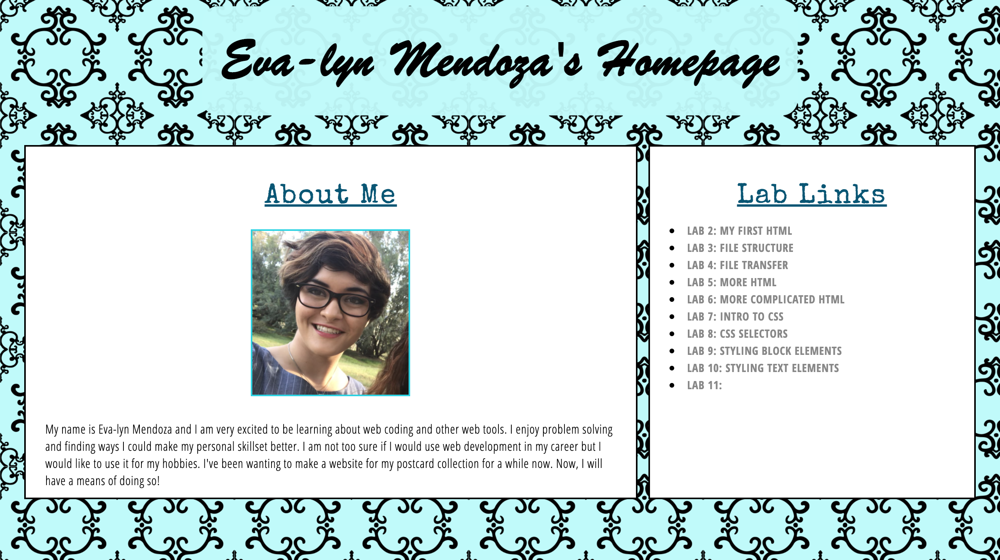

Results
My background image is running successfully with no further problems.
I am very happy with the way it came out.
The fonts I used from google fonts include;
Open Sans Condensed , I used this for my body,
Open Sans Condensed Bold , I used this for all of my bold text in my body,
Special Elite , I used this for my h2, h3 headings.
I didn't change the font of my title because I couldn't find a google font
that was cursive and bold.
Editing the letter spacing, word spacing, and line height was relatively
easy. We just changed these values until they appeared to look appealing.
For Leo's background image we found out that he linked both his lab.css
and site.css which was causing conflicts. He also had a background color
for his body which covered most of his background image. Once we took care
of those two things we were able to successfully get his image working.
For my landing page I imported the text styles from my Lab 10 css to my Site.css.
After importing my css I made some color changes to match the color
scheme of my homepage. I am very happy with how it all looks.
